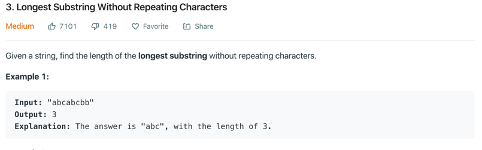
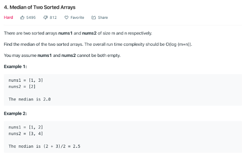
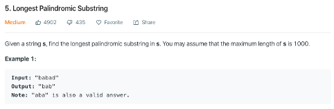
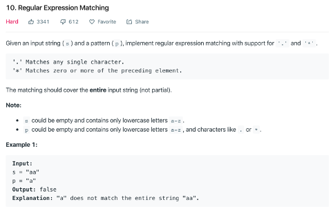
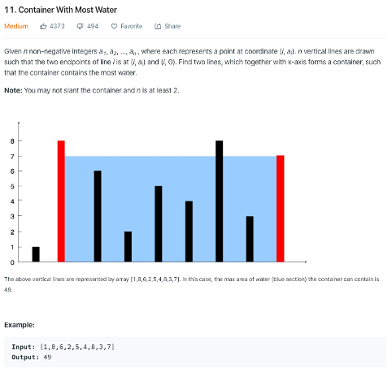

lengthOfLongestSubstring (cache) O(n)

We set two indexes, i and j, i to indicate the start of slide window, and j for end.
First we move j to the right, once we find a duplicated value, we stop, and calculate the length.
Then, we move i to right to remove the first duplicated value.
We also use a dict to store where we store the value.
1 | def lengthOfLongestSubstring(self, s): |
findMedianSortedArrays (binary search) O(log(m+n))

left_part | right_part
A[0], A[1], ..., A[i-1] | A[i], A[i+1], ..., A[m-1]
B[0], B[1], ..., B[j-1] | B[j], B[j+1], ..., B[n-1]We use i and j to divide the list A and B. Once we reach following conditions, we can get the median.
- len(left_part)=len(right_part)
- max(left_part)≤min(right_part)
- median = (max(left_part) + min(right_part)) / 2
We can simplify the condition to:
- B[j−1]≤A[i] and A[i−1]≤B[j]
- j=(m+n+1)/2-i
We do binary search to find the i:
- if B[j−1]≤A[i] and A[i−1]≤B[j], we found the median
- if B[j−1]>A[i], we need to increase i using binary search
- if A[i−1]>B[j], we need to decrease i using binary search
Note:
- imin, imax, half_len = 0, m, (m+n+1)//2
- i = (imin+imax)//2, j = half_len – i
- if i < m and nums2[j-1] > nums1[i]: imin = i + 1 # binary search
- elif i > 0 and nums1[i-1] > nums2[j]: imax = i - 1 # binary search
1 | def findMedianSortedArrays(self, nums1, nums2): |
longestPalindrome (dp) O(TP)

We set two indexes,’i’ and ‘j’, i to indicate the length of slide window, j to indicate the start of slide window, the dp formular is:
P(i, j) = P(i+1, j-1) + 2, if s[i] == s[j].
Note:
- P(i, i) = 1
- since ‘aa’ is also palindrome, so for P(i, i+1) = 2 if s[i] = s[i+1]
1 | def longestPalindrome(self, s): |
isMatch (dp) O(MN)

We firstly, rephrase the p, let it divide as single pattern, such as [“a”, “b”, ‘.’, ‘.’].
Then, according to the pattern p, we check string s from the end to the front.
We use a recursive function like this:
- For specific char at the end of p, such ‘a’, we check whether there is a ‘a’ at the end of s.
- For common char ‘.’ at p, we match any single char at the end of s.
- For ‘a*’, we use a loop to iterate all possible cases to call recursive function, such as, to match ‘a’, ‘aa’, ‘aaa’,…
- For ‘.*’, based on the previous method, we also check match empty string case.
- We can add memory to avoid repeated check(dp).
1 | def isMatch(self, text, pattern): |
maxArea (trick) O(n)

We set i = 0, and j = len(heights), each time, we fasten the shorter height, and recalculate the max area. Beceuase if the height is shorter than current height, it also has a short length on x-axis, it cannot have a larger volumn.
Attention: we cannot use dp, since this problem doesn’t has the optimal sub-structure.
This trick words, since only this direction has a better solution, area formed between the lines will always be limited by the height of the shorter line.